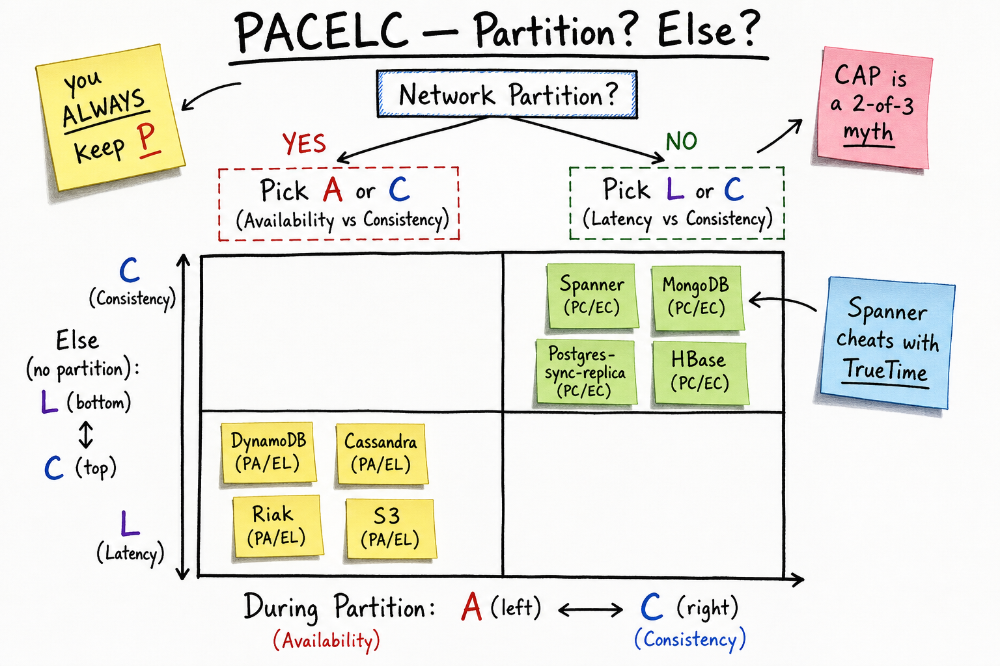

CAP Theorem & PACELC // Concept Primer
CAP says: during a network partition, a replicated system must give up either Availability or Consistency. PACELC adds: even when there's no partition, you still trade Latency for Consistency. The whole game is being explicit about which you sacrifice and when.

PACELC decision tree: "Partition?" branches to A-vs-C; "Else?" branches to L-vs-C. Below: 2x2 grid plotting DynamoDB / Cassandra / Riak / S3 (PA/EL), Spanner / MongoDB / HBase / Postgres-sync (PC/EC). Sticky notes: "you ALWAYS keep P", "CAP is a 2-of-3 myth", "Spanner cheats with TrueTime".
01 — What Problem It Solves
Any distributed data store with more than one replica faces an inescapable choice. Networks fail, machines fail, clocks drift. CAP and PACELC are the vocabulary for naming those tradeoffs honestly.
Why this matters in an interview: many candidates can list "CAP", but stop at the wrong place. Senior engineers reason in PACELC because real systems spend almost all of their time not partitioned, and the latency-vs-consistency tradeoff is the one you actually live with day to day.
The interview-defining sentence: "P is not a choice — partitions happen whether you want them or not. CAP is really 'pick A or C when a partition occurs.' PACELC adds: 'pick L or C otherwise.'"
01a — Core Vocabulary
| Term | Definition | Notes |
|---|---|---|
| C (Consistency) | In CAP: linearizability — every read sees the most recent write. | Not the C in ACID. CAP-C is the strongest single-key consistency. |
| A (Availability) | Every request to a non-failed node returns a non-error response. | "Available" here means total — even minority nodes must answer. Stricter than "high availability". |
| P (Partition tolerance) | System continues operating despite arbitrary network partitions. | Required in practice; you don't get to opt out. |
| L (Latency) | Response time (in the absence of partition). | The "everyday" tradeoff against consistency. |
| Partition | Network failure that splits nodes into groups that can't talk. | Includes packet loss, switch failure, asymmetric routing, GC pauses long enough to look partitioned. |
| CAP theorem | (Brewer, 2000; Gilbert-Lynch, 2002) During a partition, choose A or C. | "Pick 2 of 3" is the lay version — misleading. |
| PACELC | (Abadi, 2010) If Partition: A or C; Else: L or C. | Strictly more useful than CAP for system design. |
| Linearizable | Single-register, real-time-ordered, every read sees latest write. | "Strongest" consistency; what CP systems give you. |
| Eventual consistency | Replicas converge to same state if no new writes. | Vague; pair with "session" or "monotonic-read" guarantees. |
| Strict serializability | Linearizability + serializability (multi-key transactions). | Spanner's claim. Beyond CAP-C strictly. |
02 — The Three (Two) Choices
| Type | Behaviour during partition | Examples |
|---|---|---|
| AP | All nodes still answer; minority side returns possibly stale data. Reconciles after partition heals. | Cassandra (default), DynamoDB (default), Riak, S3, DNS, web caches. |
| CP | Minority side refuses to answer (or only reads). Only nodes that can talk to the quorum serve traffic. | etcd, ZooKeeper, Spanner, Consul, HBase, MongoDB (strong-read mode). |
| CA (theoretical) | Doesn't apply — the assumption is "no partition", which doesn't hold at scale. | Single-node Postgres / MySQL. The instant you add a remote replica, you must face P. |
The real choice is AP vs CP. "CA" only makes sense as "I have one node, partitions don't apply" — which is not a scalable system.
04 — What "Partition" Actually Means
Naive: "the cable got cut between the two data centers." Real:
- Packet loss — partial drop rate > 30% acts like partition for TCP timeouts.
- Asymmetric partition — A can hear B, B can't hear A. Worst kind; gossip thinks B is dead.
- Switch / router failure — segments lose connectivity to each other.
- GC pause / VM pause — a node disappears for 30s, others time it out; it wakes up thinking it's still leader. This is split-brain.
- Cross-AZ / cross-region link loss — common in cloud; AWS publishes incident reports about it monthly.
- Slow network — if latency > your timeout, it's "indistinguishable from partition" (FLP impossibility).
You cannot design out partitions. You can only choose how to behave during them. Hence P is always picked.
05 — The 2-of-3 Myth
"CAP says you can pick 2 of {C, A, P}" — this framing is technically correct but practically misleading. Why:
- P isn't optional. Real networks partition; refusing P means "I run on a single perfectly-reliable machine." Not a system design.
- You're not picking once. Most of the time there's no partition; your behaviour then is governed by PACELC, not CAP.
- Real systems are tunable. Cassandra with QUORUM is more CP than Cassandra with ONE. Same code, different operational choice.
- Availability is binary in CAP, gradient in reality. CAP-A means "all requests return"; production-A means "99.99% of requests return in under 200ms." Different question.
Brewer himself wrote "CAP Twelve Years Later" (2012) saying the strict 2-of-3 framing is wrong; the spirit is "you must explicitly choose how to handle partitions." Cite this when interviewers push.
06 — Why PACELC Is the Senior Framing
Abadi's 2010 extension. Notation: [P-during-partition] / [Else-without-partition].
If Partition (P):
choose A (PA) or C (PC)
Else:
choose L (EL) or C (EC)
PA/EL : DynamoDB, Cassandra, Riak, S3
Always pick latency / availability.
Read can be stale; write is always accepted.
PC/EC : Spanner, etcd, ZooKeeper, MongoDB (linearizable), HBase
Always pick consistency.
Reads/writes pause to coordinate; minority can't write during partition.
PA/EC : (rare) Yahoo PNUTS
During partition: take availability hit.
Normally: be consistent (sync replication).
PC/EL : (also rare) some configured Riak / Cassandra modes
During partition: refuse minority.
Normally: low latency (don't wait for quorum).
Most production systems are at the diagonal — PA/EL (eventual everything, fast everywhere) or PC/EC (consistent everything, pay for it).
07 — Real Systems Classified
| System | PACELC | Notes |
|---|---|---|
| DynamoDB (default) | PA/EL | Eventual consistent reads by default. Strong reads available at cost. |
| DynamoDB (strong reads) | PC/EC | Tunable. Strong reads cost 2x. |
| Cassandra (ONE) | PA/EL | Single replica ack; fast and possibly stale. |
| Cassandra (QUORUM) | PA/EC | Quorum read/write; consistent in absence of partition. During partition can still operate on minority (lossy). |
| Riak | PA/EL | Dynamo-style; vector clocks for conflict. |
| S3 | PA/EL | Now read-after-write consistent for puts (2020+), but cross-region remains eventual. |
| MongoDB (default w > 1) | PC/EC | Primary required for writes; minority refuses. |
| HBase | PC/EC | Region server is single writer; partition kills the region. |
| etcd / ZooKeeper | PC/EC | Raft / Zab; minority can't accept writes. |
| Spanner | PC/EC | TrueTime + Paxos; externally consistent globally, ~10ms commit wait. |
| Postgres (sync replica) | PC/EC | Primary waits for replica; if partition, writes block. |
| Postgres (async replica) | PA/EL | Replica may be stale; primary keeps accepting writes. |
| CockroachDB | PC/EC | Raft-based; Spanner-like guarantees without TrueTime. |
| FoundationDB | PC/EC | Strict serializability via Paxos. |
08 — Tunable Consistency Systems
Real-world systems aren't static AP or CP — they're tunable per request.
Cassandra: CONSISTENCY ONE → PA/EL (fast, stale OK) CONSISTENCY QUORUM → PA/EC (consistent in normal ops) CONSISTENCY ALL → PC/EC (any node down = unavailable) DynamoDB: ConsistentRead=false → PA/EL (default, half the price) ConsistentRead=true → PC/EC (twice the price, ~10ms slower) MongoDB: writeConcern: 1 → PA/EL (primary ack only) writeConcern: majority → PC/EC (sync replica) readConcern: linearizable → PC/EC (slow, strong)
Senior insight: the right answer in an interview is often "we'd use Cassandra at QUORUM for the order ledger (we need EC), and Cassandra at ONE for the recently-viewed feed (EL is fine)". Same store, different requests.
09 — Mapping to Consistency Models
PACELC's "C" is linearizability. But there's a whole ladder between "linearizable" and "eventual" — see Consistency Models. Common pairings:
| PACELC class | Typical consistency level | Common use case |
|---|---|---|
| PC/EC | Linearizable / strict serializable | Banking, locks, leader election, metadata. |
| PA/EC | Read-your-writes / monotonic-read, eventual under partition | User profile updates, ecommerce cart. |
| PA/EL | Eventual + session guarantees | Social timeline, recently-viewed, search index, DNS. |
"Can a system be CP and highly available?" Yes — if partitions are rare. Spanner has 99.999% availability while remaining CP, because Google's network is engineered so partitions affecting quorum are vanishingly rare. CP-ness sets behaviour during a partition, not the partition probability itself.
10 — Where It Shows Up
- Key-Value Store — explicit AP vs CP choice with quorum knobs.
- Payment Gateway — CP for ledger (must be linearizable).
- Uber — CP for ride state transitions, AP for driver location (PA/EL).
- Twitter — AP for timelines (eventual is fine).
- WhatsApp — AP for delivery (eventual + receipts), CP per-conversation order.
- Stock Exchange — CP (linearizable order book; can't trade what isn't there).
- Cassandra, DynamoDB, ZooKeeper, Spanner.
Related: Replication, Consistency Models.
11 — Common Interview Probes
- "Classify these five systems by PACELC: Cassandra, Spanner, S3, etcd, DynamoDB."
- "Can a system be CP and highly available? Defend your answer."
- "What does 'AP' mean if there's no partition right now?"
- "Why is the 2-of-3 framing of CAP a misleading?"
- "Your payment system needs strong consistency — pick a store and justify."
- "Cassandra with QUORUM — is that CP or AP?"
- "How does Spanner achieve CP across regions while staying fast?"
12 — Interview Q&A
State CAP in one sentence.
In the presence of a network partition, a replicated system must choose between consistency (linearizability) and availability (all non-failed nodes still respond). P is not an option — partitions happen.
Why is "pick 2 of 3" misleading?
Three reasons: (1) P isn't a free choice — partitions occur whether you plan for them or not; (2) the tradeoff only fires during a partition, which is rare; (3) real systems live in PACELC, where the everyday choice is L vs C. Brewer himself walked back "2 of 3" in his 2012 retrospective.
Classify DynamoDB.
Default reads: PA/EL. Strong reads (ConsistentRead=true): PC/EC at 2x cost. So the same product is in both quadrants depending on the request. Most workloads use eventually-consistent reads.
Classify Spanner.
PC/EC. Uses Paxos for consensus across replicas in multiple regions; TrueTime (atomic-clock-backed bounded uncertainty) lets it assign externally-consistent global timestamps with a ~7ms commit-wait. Sacrifices write latency for strict serializability worldwide.
Classify Cassandra at QUORUM.
PA/EC. In normal operation, QUORUM read + QUORUM write satisfies W+R>N → consistent. During a partition, the minority side can still accept writes (it just can't reach quorum, so it returns failure for QUORUM ops). The system as a whole stays available for ops that can reach a majority. It's not CP because the minority isn't forced to refuse all reads.
Can a system be CP and highly available?
Yes. CAP-A is binary ("all requests succeed in some response"), but operational availability is a SLO ("99.99% in 200ms"). Spanner is CP yet runs at 99.999% because Google's network engineering makes quorum-affecting partitions vanishingly rare. CP determines behaviour during partition; SLO depends on frequency of partitions.
What does AP really cost?
You give up linearizability everywhere, all the time — not just during partitions. Even without a partition, replicas can lag (EL part of PA/EL); reads can be stale. You also gain conflict resolution as a permanent design problem (LWW, vector clocks, CRDTs). In return: writes don't block on quorum, reads can come from the nearest replica, failover is instant.
How would you build a payment system?
PC/EC for the ledger — you cannot tolerate stale or divergent balance reads. Use Spanner, CockroachDB, or Postgres with sync replication for the core ledger; accept the latency cost (10-100ms commit). Use AP/EL caches and read-only projections for non-critical surfaces (dashboards, statements older than > 1min).
How would you build a social timeline?
PA/EL all the way: timelines are read-heavy, eventual is acceptable, latency is paramount. Cassandra with CONSISTENCY=ONE for reads, QUORUM for writes (or even ONE if you can tolerate occasional lost tweet during failure). Twitter, Instagram, Facebook all run this way.
Walk through Spanner's CP guarantees.
Each shard's WAL is replicated by Paxos across replicas in 3+ regions; majority must ack a commit. TrueTime API provides [earliest, latest] timestamp interval (~7ms wide) using GPS + atomic clocks. Spanner waits out the uncertainty before returning, so any later transaction is guaranteed to see a strictly-greater timestamp — external consistency. Cost: ~10ms commit-wait + cross-region RTT.
When does "C" in ACID differ from "C" in CAP?
ACID-C means "the database enforces declared invariants and constraints" — a single-node concept about transactions. CAP-C is linearizability across replicas — a multi-node concept about ordering of operations. A single-node Postgres is ACID-C but doesn't even apply to CAP. A Cassandra cluster can be ACID-C (constraints) but not CAP-C (no linearizability).
SDE2 vs SDE3 differentiator?
| SDE-2 | SDE-3 |
|---|---|
| States CAP. Can pick AP vs CP for a problem. | + frames in PACELC, knows the 2-of-3 framing is wrong, distinguishes CAP-C from ACID-C, can classify 8+ real systems including their tunable modes, knows Spanner cheats with TrueTime, can explain why CP and HA aren't contradictory, picks per-request consistency (Cassandra ONE vs QUORUM) rather than per-system |